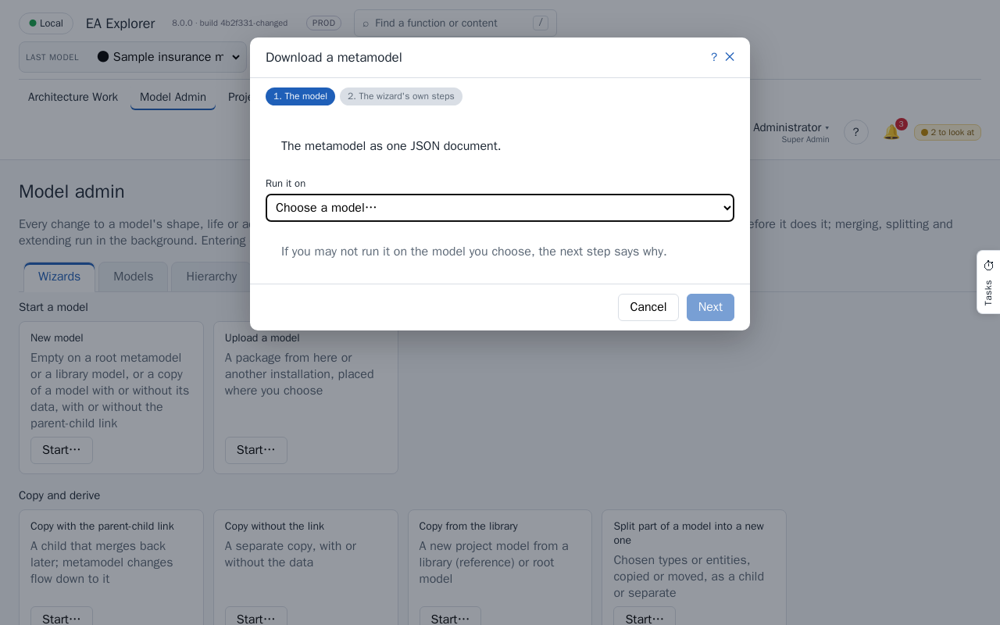

Download a metamodel
For: Model Admin, Industry model makers, Developers
The metamodel as a workbook, to read, share or change in Excel.

#/model-admin/wizards?wizard=specWhy do this
Downloading the metamodel gives everyone a readable description of what the model holds: types, attributes, pick lists and relationships. It is also the starting point for designing a changed or new metamodel in Excel. See Metamodels: the shape of a model.
A metamodel change ripples: into what people may record, what reports read, what rules check and what integrations send. That is why it goes through drafts and review, and why each version is kept and can be compared.
In TOGAF terms: The content framework and content metamodel: what building blocks and relationships the architecture may hold. See EA Explorer and the TOGAF Standard.
The goal: A model's metamodel is in a workbook you can read and share.
Steps
- Open Model Admin › Wizards, Download a metamodel.
- Pick the model; Download.